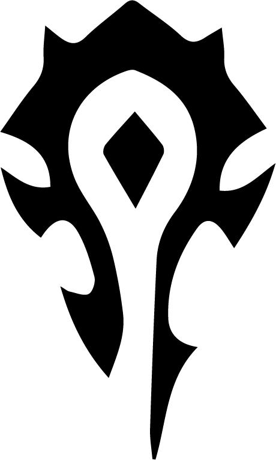

Thrall
Antiguo Jefe de Guerra de la restaurada Horda chamanística y fundador de la nación de Durotar en Kalimdor.

Orgrimmar la ciudad capital de la horda
Nacimiento y Orígenes
En una época de gran conflicto, un niño orco llamado Go'el nació de Durotan y Draka, líderes del clan Lobo Gélido. Su vida comenzó en la penumbra de la guerra, marcada por la traición y la pérdida. Tras la muerte de su madre en la batalla, fue capturado por humanos y llevado a un campo de prisioneros, donde fue privado de su cultura y legado.
Escape y Encuentro con la Cultura Orca
El destino sonrió a Go'el cuando, en su juventud, logró escapar de sus captores. Su viaje lo llevó a las tierras heladas, donde encontró a Drek'Thar, un chamán venerado de su pueblo. Este anciano lo guió en el descubrimiento de su identidad, enseñándole sobre los antiguos rituales orcos y el poder de los elementos. Así, Go'el comenzó a forjar su camino como un líder destinado a restaurar el honor de su gente.
Liderazgo de la Horda
Con el tiempo, Go'el emergió como una figura clave en la reconstrucción de la Horda, que había caído en la corrupción bajo líderes tiránicos. A medida que los clanes orcos buscaban un nuevo rumbo, Go'el asumió el nombre de Thrall y se convirtió en Warchief. Su liderazgo se caracterizó por un enfoque en la unidad y la reconciliación, transformando la Horda en una fuerza cohesiva, con un fuerte sentido de identidad y propósito.
La Tercera Guerra
Durante la Tercera Guerra, Thrall se alió con diversas razas de Azeroth para enfrentar la amenaza de la Plaga. En batallas decisivas, como la defensa del Monte Hyjal, su estrategia y valentía fueron fundamentales para la victoria sobre el Rey Exánime y sus seguidores. Su capacidad para unir fuerzas opuestas marcó un hito en la historia de Azeroth.
Historia de Thrall, el Warchief de la Horda
Fundación de Durotar
Tras la guerra, Thrall lideró a su pueblo a una nueva tierra, Durotar, donde estableció la ciudad de Orgrimmar. Este nuevo hogar se convirtió en un símbolo de renacimiento y esperanza para los orcos, permitiendo que su cultura prosperara y floreciera, lejos de las sombras del pasado.
Enfrentamiento con la Legión Ardiente
A lo largo de las décadas, la amenaza de la Legión Ardiente persistió. Thrall, como un chamán poderoso, participó activamente en la defensa de Azeroth, ayudando a coordinar esfuerzos entre las diversas razas para enfrentar este mal antiguo. Su papel en estas batallas fue crucial, fortaleciendo la unidad entre los pueblos de Azeroth en tiempos de crisis.
Renuncia y Legado
En un giro de su historia, Thrall decidió renunciar a su puesto como Warchief durante la era de Cataclysm. Este acto no solo reflejó su deseo de buscar un camino personal como chamán, sino también su confianza en que la Horda podría sostenerse bajo el liderazgo de otros. Sin embargo, su legado perduró, ya que continuó siendo una figura venerada y respetada en los momentos más difíciles.
Regreso como Líder
A lo largo de los años, Thrall regresó en momentos críticos, aportando su sabiduría y su conexión con los elementos. En conflictos como el de la batalla entre la Horda y la Alianza, su presencia fue un faro de esperanza y diplomacia. A lo largo de su vida, Thrall ha encarnado la lucha por la paz, la reconciliación y la búsqueda de un futuro mejor para todos los pueblos de Azeroth.